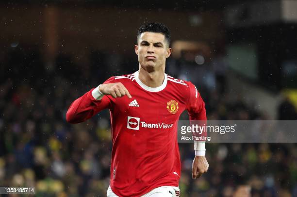
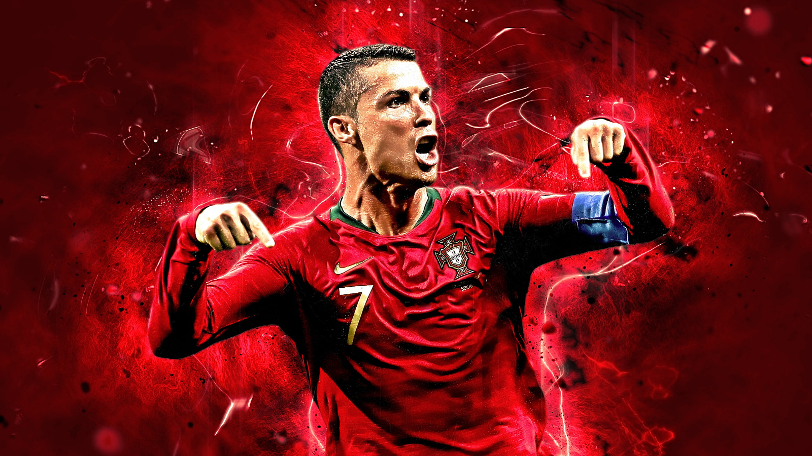
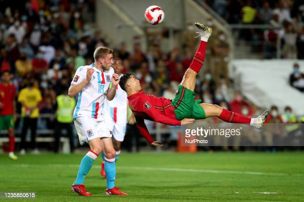

Introduction
Cristiano Ronaldo, often referred to as CR7, is a Portuguese professional footballer widely considered one
of the greatest football players in history. With numerous awards, titles, and records under his belt,
Ronaldo's prowess on the field is unmatched.
Career Highlights
- Began his professional career with Sporting CP in Portugal.
- Joined Manchester United in 2003, winning three Premier League titles and a UEFA Champions League.
- Moved to Real Madrid in 2009, becoming the club's all-time top scorer.
- Won four Champions League titles with Real Madrid.
- Joined Juventus in 2018, continuing to break records in Serie A.
- Returned to Manchester United in 2021.
- Has won five Ballon d'Or awards, given to the best player in the world.


